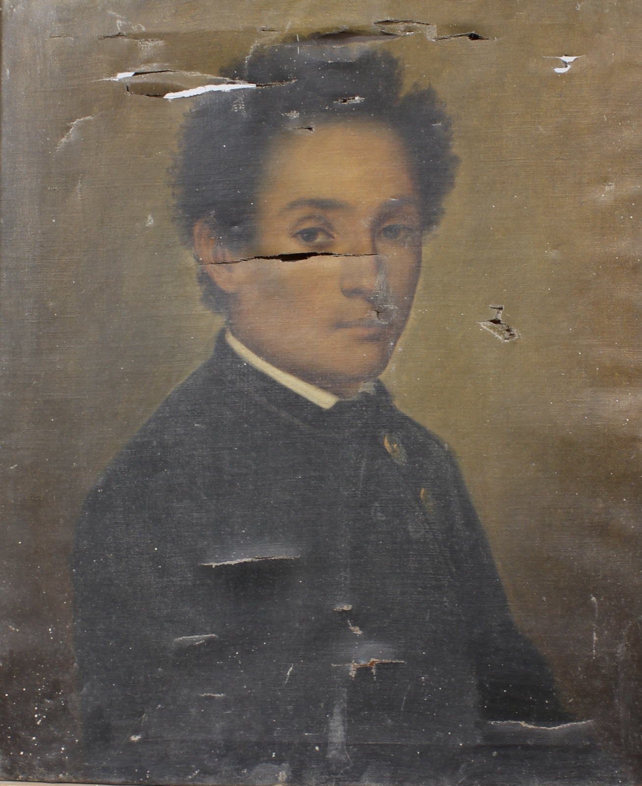
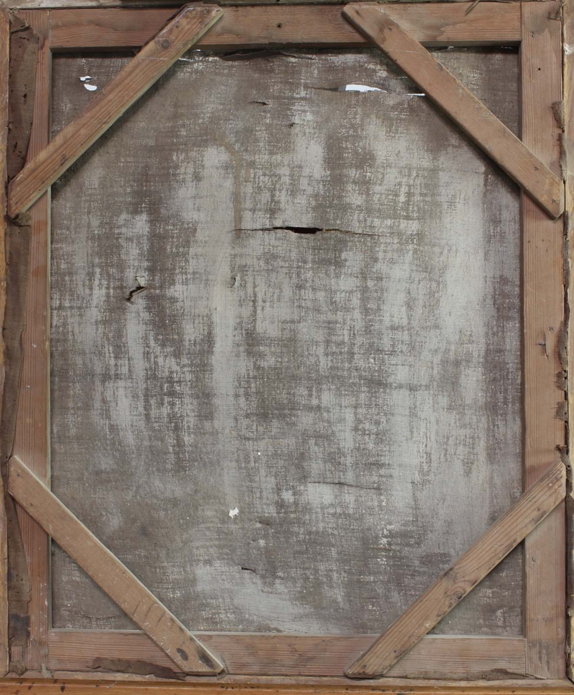
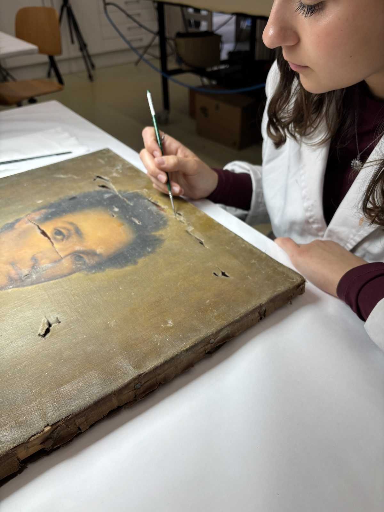
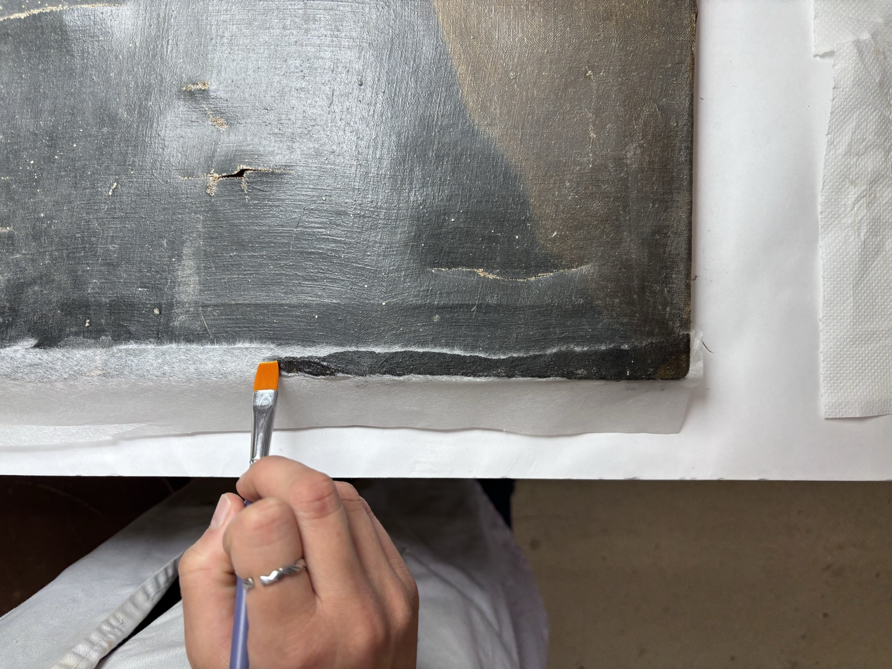
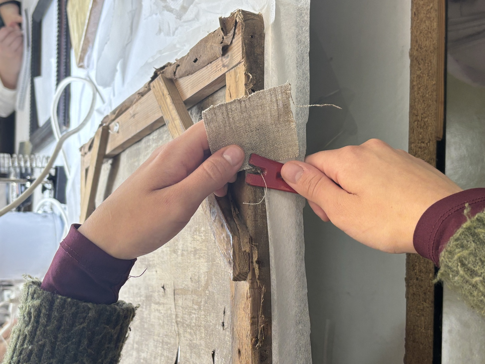
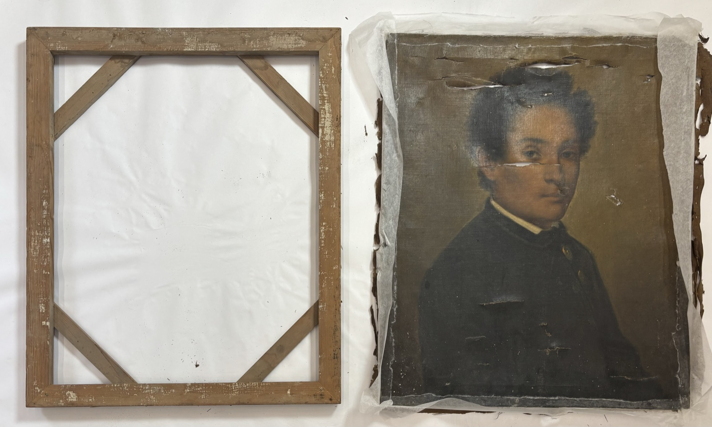
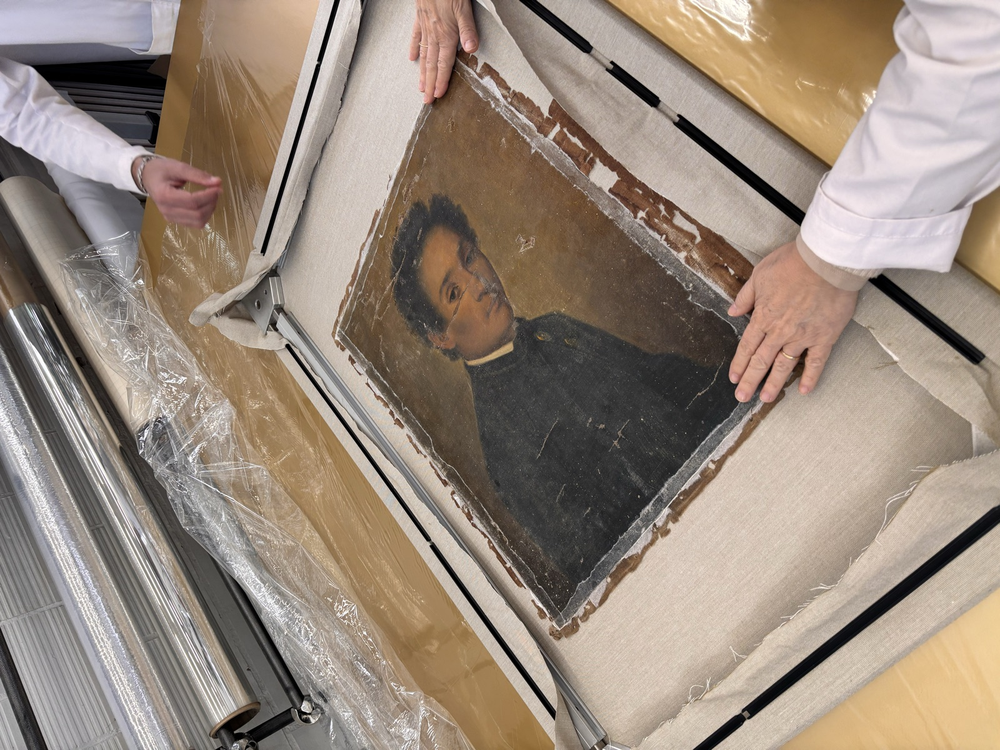

Dentro del marco académico del taller de conservación-restauración de 4.º grado, restauré una pintura sobre tela procedente del Museo de l'Empordà, cedida al ESCRBCC para su intervención. La obra estaba montada sobre un bastidor fijo de madera y presentaba un soporte de tela de lino industrial con trama de tafetán.
El estado de conservación era muy afectado: deformaciones, suciedad acumulada, rasgones y pérdidas en el perímetro.
La capa de preparación, de naturaleza probablemente tradicional —sulfato cálcico y cola animal—, era fina e irregular. La capa pictórica mostraba una buena adhesión general al soporte, a pesar del estado de degradación de la pieza. La superficie presentaba un barniz oxidado, identificado como posible barniz dammar, que alteraba los colores originales.
Estado inicial · diagnóstico
La intervención empezó con la documentación gráfica y analítica, seguida del examen organoléptico. Después se retiró el marco y se procedió a la fijación de la policromía.
Fase 01 · Documentación y fijaciónSe protegió el perímetro de la obra con papel japonés y cola de conejo. Esta protección preparó la pieza para poder desclavarla del bastidor sin comprometer la capa pictórica.
Fase 02 · Protección del perímetro
Una vez desclavada la tela del bastidor fijo original, se retiró por completo y se realizó la limpieza mecánica del bastidor y del reverso del soporte, dejando la tela lista para los tratamientos posteriores.


Las deformaciones se corrigieron mediante procesos de humectación controlada, presión y aplicación de calor localizado, consiguiendo el aplanado progresivo de la tela.
Los rasgones se estabilizaron mediante soldadura de fibras con microsoldador, usando cola de esturión y almidón de trigo.
Fase 03 · Deformaciones y rasgonesLa tela se consolidó con un adhesivo sintético sobre una tela de poliéster, utilizando una mesa caliente con sistema de succión y control de temperatura.
Una vez estabilizado el soporte, se tensó la tela sobre un nuevo bastidor con grapas y tensión progresiva, garantizando una distribución uniforme.
El reverso quedó limpio y aplanado, con la tela original consolidada sobre el nuevo soporte de poliéster y lista para los tratamientos de la capa pictórica.
Fase 04 · Consolidación y tensado
La limpieza superficial de la capa pictórica se realizó mediante sistemas acuosos tamponados, seleccionados a partir de tests previos de pH. Se hicieron pruebas con el test de Cremonesi para eliminar el barniz envejecido y, finalmente, se limpió con la proporción LE3 (70 % ligroína, 30 % etanol).
Tras la limpieza se aplicó un primer barnizado de protección con barniz de retoque y se estucaron las lagunas con carbonato cálcico y cola de conejo. La reintegración cromática se inició con acuarelas para establecer una base y se completó con pigmentos y barniz de retoque, aplicando un criterio ilusionista para recuperar la lectura de la obra.
Fase 05 · Limpieza y reintegración